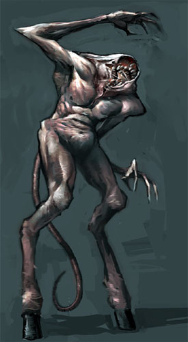

| Climate/Terrain | Any (Lower Planes) |
| Frequency | Very Rare (Uncommon) |
| Organization | Solitary (Large Group) |
| Activity Cycle | Any |
| Diet | Carnivoro |
| Intelligence | Low Intelligence (5) 7 punti combattimento |
| Treasure | None |
| Alignment | Neutral Evil |
| No. Appearing | 1 (2d6+3) |
| Armor Class | 4 |
| Movement | 12 |
| Hit Dice | 4+4 |
| Thac0 | 16 |
| No. of Attacks | 1 Morso / 2 Artigli |
| Damage / Attacks | 1d6+2 / 1d4 / 1d4 |
| Special Attacks | Divorare i Corpi / Nutrirsi dei Corpi |
| Special Defenses | Pelle di Cuoio |
| Magic Resistance | 15% |
| Size | Medium (1,70 m. di altezza) |
| Morale | Elite (14) |
| XP value | 420 |
Descrizione
Questa orrenda creatura demoniaca ha una pelle marrone di cuoio scuro, una lunga e flessibile coda e le zampe caprine. La particolarità di questa creatura, però, risiede nella mancanza di collo e testa e nella presenza sulla parte alta del torso di una voragine nel cuoio che rappresenta la grande bocca di questo essere demoniaco.
Combat
Il Mangiatore di Corpi attacca le sue vittime in corpo a corpo con il suo morso ed i suoi affilati artigli. Quando il Mangiatore di Corpi colpisce con il morso il proprio avversario effettuando un tiro pari a 18, 19 e 20 naturale lo stesso attiverà l’abilità divorare i corpi attaccandosi tenacemente alla vittima e mordendola ripetutamente in uno spasmo demoniaco. Lo stesso potrà, dunque, attaccare nuovamente con il morso la propria vittima ottenendo un bonus di +2 al tiro per colpire e, qualora la colpisca, potrà attaccarla nuovamente effettuando quindi un massimo di tre attacchi. Si noti che questi attacchi ulteriori sono simultanei ed, avvenendo in rapidissima successione l’uno dall’altro, si verificheranno allo stesso fattore iniziativa del primo morso, inoltre, tali attacchi non potranno produrre risultati critici o acritici (il calcolo del danno di un eventuale critico effettuato con il primo morso, però, ricomprenderà anche il danno prodotto dai morsi successivi) e non potranno scatenare nuovamente l’abilità divorare i corpi.
Inoltre, ogni volta che il demone colpisce con il morso una creatura con struttura fisica animale (non quindi, non morti, costruiti, vegetali, elementali, blog ed esseri similari) si nutre del corpo della stessa recuperando la metà (per difetto) dei danni effettivamente provocati alla vittima con questa forma di attacco.
La pelle
del Mangiatore di Corpi è formata da un duro e compatto cuoio. Per tale motivo
questa creatura riduce
(potendo anche azzerare il danno subito) di
3 punti danno per ogni singolo
attacco fisico da botta,
di 2 punti danno per ogni
singolo attacco fisico da taglio
e di 1 punto danno per
ogni singolo attacco fisico da punta.
Questo benefico non si estende ai danni diversi da quelli fisici (come i danni
da fuoco ed i danni di molte magie i cui effetti non possono essere ricondotti a
quelli di danni fisici).
Habitat/Society
I Mangiatori di Corpi sono esseri demoniaci inferiori. La loro bassa intelligenza ed i loro poteri demoniaci inferiori sono elementi che posizionano queste creature molto in basso nella scala gerarchica demoniaca. Raramente usate come guardie sono più spesso utilizzate in numero abbondante come divoratori di copri a loro dati da un demone superiore. In stato libero questi esseri vagano in larghi gruppi nei Piani Esterni Inferiori gettandosi su tutte le creature possano ritenere opportune da provare a divorare. Non dispongono apparentemente di alcuna forma di organizzazione sociale limitandosi il gruppo a muoversi come una macchina divoratrice vagante.
Ecology
Con la pelle dei mangiatori di corpi può costruirsi una speciale corazza di cuoio chiamata Corazza del Mangiatore di Corpi.
Il tempo richiesto per la loro costruzione è pari a 35 giorni.
Statistiche di Skinning
Modificatore alla prova di skinning: - 3
Numero di pelli per creatura: sufficienti a creare 1/2 corazza
Valore di mercato della singola pelle: 75 g.p.
Statistiche della Corazza
AC: 6
Peso: 22 libbre
Punti Corazza: 7
Modificatore alla prova di produzione: - 3
Valore: 350 g.p.
Riparazione: 1 punto corazza ogni 2 giorni
Tiro Salvezza contro Rottura: 11
La corazza di mangiatore di corpi scaglie può considerarsi a tutti gli effetti una corazza di cuoio rinforzata. Queste corazze, inoltre, possono essere incantate facilmente con il seguente incantamento minore:
Leather of Damage Reduction (Abjuration, 250 xp, +1500 g.p.)
Una volta al giorno chi indossa questa corazza può attivare il relativo potere. Attivare il potere richiede un'azione complessa (con il solo componente vocale della parola magica di attivazione e senza che sia richiesta la concentrazione) che si svolge con un fattore iniziativa pari +3. Una volta attivato il potere, per 6 rounds (nei quali andrà compreso il round di attivazione per la parte a questa successiva) chi indossa la corazza vedrà ridurre i danni subiti (potendoli anche azzerare) di 3 punti danno per ogni singolo attacco fisico da botta, di 2 punti danno per ogni singolo attacco fisico da taglio e di 1 punto danno per ogni singolo attacco fisico da punta. Questo benefico non si estende ai danni diversi da quelli fisici (come i danni da fuoco ed i danni di molte magie i cui effetti non possono essere ricondotti a quelli di danni fisici).